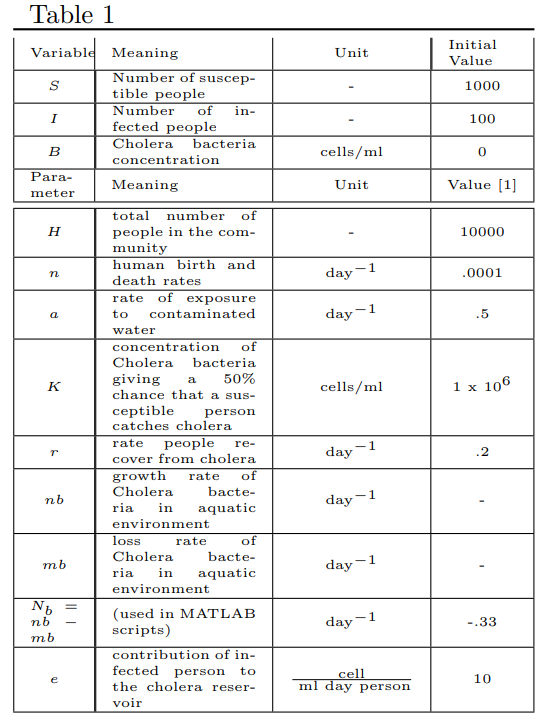
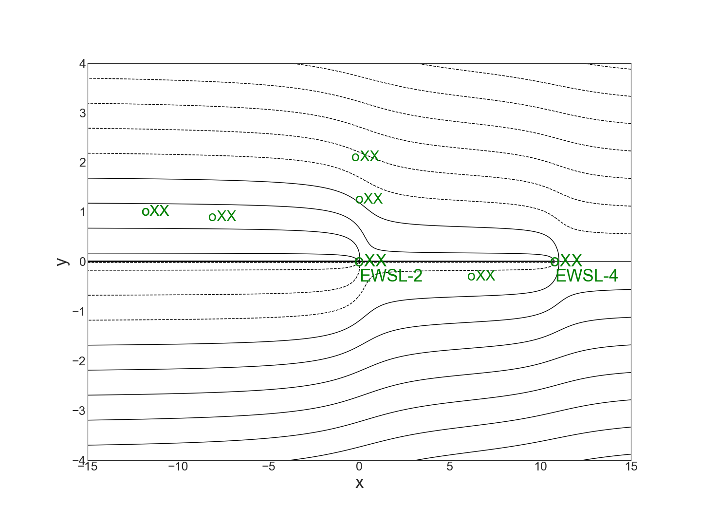
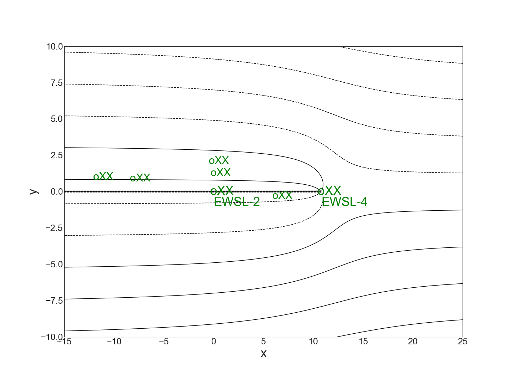
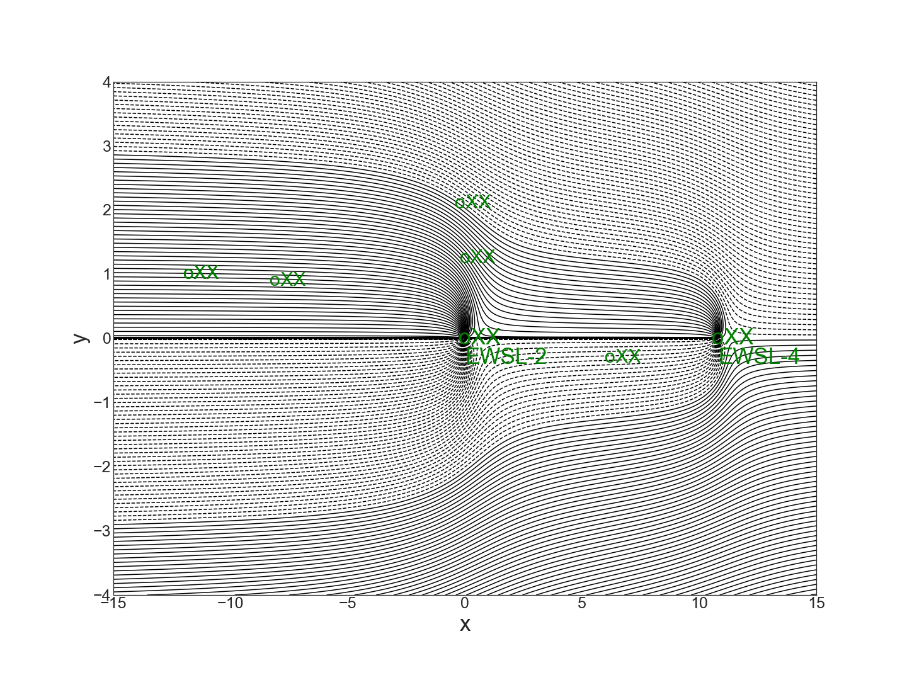
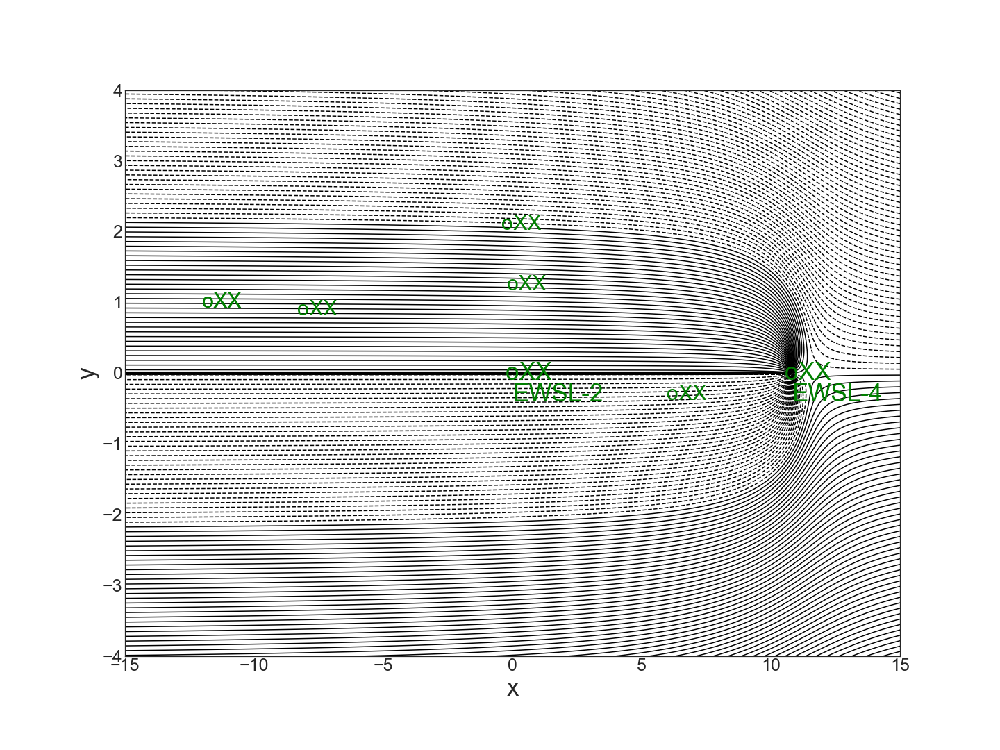
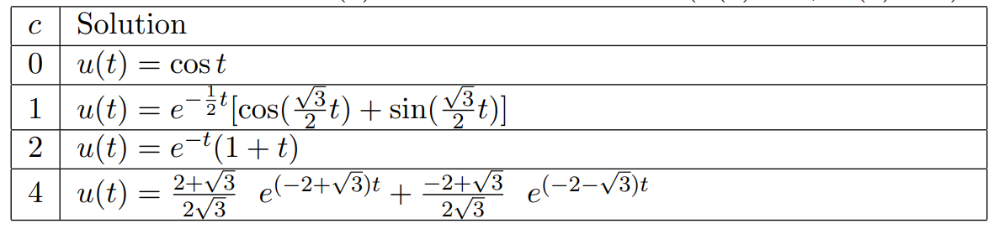

4. Contaminant Extraction Modeling#
Though the idea of streamline modeling of 2-dimensional groundwater flow using a complex potential \(\Omega(z)\) is conceptually elegant, in reality, groundwater flow is more complicated to analyze. Being by nature 3 dimensional, a polluted groundwater flow (plume) is normally analyzed using field data that is processed using sophisticated software such as MODFLOW. Good data and advanced software alone, however, will not guarantee that a 3 dimensional model gives good results. As has unfortunately been the case in real-life, errors in assumptions used to design a pollutant well extraction (“pump-and-treat”) system can result in a counter-productive remediation that wastes many hours of labor and millions of dollars. Essential features of a good model include
- good conceptual model (see the first section called Setting the Scene);
- good assumptions on boundary conditions, initial conditions, and hydraulic parameters;
- appropriate calibration;
- consideration of lateral (horizontal) properties; and
- analysis of multiple (vertical) layers.
An aquifer which is sufficiently isotropic (permeability is constant with direction) and homogeneous (permeability is constant with location) may be amenable to a relatively simple 2-dimensional model. Data from the Space Leasing plume at the Fischer-Calo Superfund site involving monitoring and extraction wells at different depths and locations (see the table below) suggest an aquifer flow system that behaves in a fairly ideal fashion, leading us to develop a 2-dimensional model to simulate flow through this porous media (sand).
{kind=link}
This table summarizes the data used in analysis of the basic model’s system well extraction strength parameter \(k\). Level designations: NE=did not exceed action level Volatile Organic Compound (VOC) contaminant concentration in past 5 years; XX=above action level contaminant. A dash (-) for Level indicates data that was not sampled/available. The well name codes CRA , MW, and PZSL refer to monitoring wells, and EWSL to extraction wells (only positions and levels were considered for the latter). \((x,y)\) coordinates are the approximations used in a reduced-scale horizontal plume model. The extraction well strength \(k\) values computed using equation (\ref{strength}) has an average strength \(k=k_{ave}\approx .16\). Well levels, names, locations, and potentials are based on EPA Fifth 5-Year Review Space Leasing Plume data included in [U.S. Environmental Protection Agency 2020]. Summary of data used in analysis of the basic model’s system well extraction strength parameter \(k\). Level designations: NE=did not exceed action level Volatile Organic Compound (VOC) contaminant concentration in past 5 years; XX=above action level contaminant. A dash (-) for Level indicates data that was not sampled/available. The well name codes CRA , MW, and PZSL refer to monitoring wells, and EWSL to extraction wells (only positions and levels were considered for the latter). \((x,y)\) coordinates are the approximations used in a reduced-scale horizontal plume model. The extraction well strength \(k\) values computed using equation (\ref{strength}) has an average strength \(k=k_{ave}\approx .16\). Well levels, names, locations, and potentials are based on EPA Fifth 5-Year Review Space Leasing Plume data included in [U.S. Environmental Protection Agency 2020].
Model Assumptions#
Basic model assumptions include
\(\,\) The Space Leasing plume is sufficiently isotropic and homogeneous and flow is generally horizontal to justify a relatively simple 2D analysis. In particular, we assume that above action level contaminant may depend on position but not on depth.
\(\,\) The contaminant behaves conservatively and moves along groundwater streamlines. Thus, our model represents convection, but excludes natural processes that include diffusion, dispersion, and chemical reaction.
\(\,\) A reduced-scale model of the plume may be positioned horizontally as in Figure \ref{slpHor}. The extraction wells (denoted EW) are thereby located at \(z_{EWSL-2}=(0,0)\) and \(z_{EWSL-4}=(10.8,0)\), and uniform flow is from left to right
{kind=link}
This figure shows the space leasing plume positioned horizontally with midplume extraction well EWSL-2 at the origin and downstream extraction well EWSL-4 at (10.8,0). Wells marked NE did not reach action level Volatile Organic Compound (VOC) contaminant concentrations in the past 5 years. Those marked XX exceeded action levels and are the targeted contaminant locations in this study. (Image based on data in [U.S. Environmental Protection Agency 2020]
\(\,\) Contaminant which is above action level must be contained by the two extraction wells. (Above action level contaminant that is not contained by the two well system is considered to be part of a secondary plume requiring an alternate method of remediation.) Hence, our goal for an effective system is that all streamlines from above action level monitoring locations to be a subset of the streamlines which end at the two extraction wells EWSL-2 (mid-plume) and EWSL-4 (downstream).
\(\,\) Based on Oct. 2019 data, the EWSL-2 (mid-plume) has a flow-rate of 24.6 gallons/minute (GPM), and EWSL-4 (downstream) is 16.1 GPM; we assume the strengths of the extraction wells are in a constant 3:2 ratio even though the extent of the plume today has certainly been impacted by a more complex history of pumping.
Methods#
We model the pollution extraction system using a complex potential of the form
where \(C=\Phi_0\) is a real constant. This is based on our discussions of modeling uniform flow and sinks. As we did in the Rankine oval problem, we use the superposition principle to obtain the complex potential \(\Omega(z)\) by adding together the complex potentials for uniform flow and the two extraction wells modeled as sinks. We determine the coefficients as follows:
\(\,\) based on an equipotential map for the SL plume [U.S. Environmental Protection Agency 2020], we set the baseline potential at \(\Phi_0=717\), so \(C=717.\)
\(\,\) Since the strengths of the mid-plume and downstream extraction wells are in a 3:2 ratio, we let \(k_1=3k\) and \(k_2=2k\). We call \(k\) the system’s \emph{extraction well strength parameter}. It follows that the velocity potential has the form
\(\,\) Under the assumption of constant horizontal uniform flow, if we estimate \(k_0\) using two equipotentials, one at \(x=x_1\) with value \(\Phi_1\) and one at \(x_1+d\) with value \(\Phi_2\), then \(k_0x_1 =\Phi_1\) and \(k_0(x_1+d)=\Phi_2\Rightarrow\) \(k_0\approx\frac{\Phi_2-\Phi_1}{d}.\) Using this process on three pairs of upstream equipotentials in a horizontally rotated version of Figure \ref{slp} (lower) and then averaging, we obtained the estimate \(k_0\approx -.145.\)
\(\,\) We study the system’s extraction well strength-parameter \(k\) by two related methods:
A. \(\,\) System Sensitivity Method
Using the values of \(\Phi\) at the monitoring wells in the above Table and computing the strength parameter \(k\) using equation gives a range of values for \(k\) between roughly .1 and .5 with an average value \(k_{ave}\approx .16\). In order to better understand the significance of \(k_{ave}\approx .16\), we explore the types of contaminant extraction behavior that can be observed for a wide range of \(k\) values.
B) \(\,\) Critical Value Method
Since we assume that an effective system must capture all targeted above action level pollutant, we look for a critical value \(k=k^*\) at which all monitoring wells with above action level contaminant are contained within the dividing streamlines for the extraction wells. The critical value \(k=k^*\) is the smallest value of the extraction well strength parameter for which the well system is effective. A second critical value \(k=\hat{k}\) indicates the strength parameter level above which the system becomes inefficient. In this case, we take inefficient to mean that the mid-plume extraction well EWSL-2 can be turned off and the targeted contaminant captured using only the downstream extraction well EWSL-4 without increasing the latter well’s strength.
Model Output#
A) \(\,\) System Sensitivity Method
The System Sensitivity Method explores a wide range of \(k\) values to arrive at a system classification.
\(\,\) Ineffective System (\(k\) is too low to capture the targeted contaminant.) }
An ineffective system occurs when \(k=k_{ave}\approx .16\) as the system fails to capture streamlines from two of the targeted monitoring well locations with above action level contaminant.
\(k=k_{ave}\approx.16\)
{kind=link}
\(\,\) Regular System (\(k\) is effective and efficient.)
A regular system such as occurs when \(k=.4\) is characterized as one which must use both the mid-plume well (EWSL-2) and the downstream extraction well EWSL-4 to capture streamlines emanating from all the targeted above action level positions.

\(\,\) Inefficient System (\(k\) is sufficiently high that the midplume well could be turned off and still maintain system effectiveness.)}
An inefficient system such as occurs when \(k=1\) is such that the downstream well (EWSL-4) operating by itself could capture all the streamlines from the targeted above action level positions, thus rendering the midstream well EWSL-2 unnecessary. The figure below shows that all the targeted streamlines are captured by EWSL-4 when the strength of EWSL-2 has been reduced to 0.
{kind=link}
B) \(\,\) Critical Value Method
The critical value method focuses on ``critical’’ values between effective/ineffective systems and between regular/inefficient systems. (Such critical values may be discovered using the System Sensitivity Method.) As shown in the figures below, we found the critical value \(k=k^*\approx .285\) is the smallest \(k\) for which the two well system effectively captures streamlines from all the targeted action level positions (XX). The system is ineffective for \(k<k^*\). A second critical value \(k=\hat{k}\approx .51\) marks the highest value of \(k\) for which both wells are needed to capture all the targeted contaminant. The system is inefficient when \(k>\hat{k}\). A regular system is one whose \(k\) value satisfies \(k^*<k<\hat{k}\). That is, the system is both effective and efficient.
 {kind=link}
{kind=link}
Sensitivity Analysis#
The System Sensitivity Method is used to classify systems as being ineffective, regular, or inefficient. The Critical Value Method identifies numerically the critical values \(k=k^*\approx .285\) dividing ineffective and regular systems and \(k=\hat{k}\approx .51\) dividing regular and inefficient systems. Our estimate that \(k\approx k_{ave}=.16\) is in the range of ineffective systems.
We can repeat the analysis only reversing the relative pumping strengths of EWSL2:EWSL4 from 3:2 to 2:3. Such a change would presumably maintain the same system cost and carbon footprint. As shown in the table below, both critical values \(k^*\) and \(\hat{k}\) decrease, indicating that reduced pumping strength is required for the 2:3 system to be regular (both effective and efficient). However, for \(k=k_{ave}\approx .16\), this reversal in pumping strength ratios would not change the ineffectiveness of the system.
{kind=link}
Intuitively, when \(k\) is small, the total volume of pumped out water remains roughly the same for both pumping strength ratios since the midplume well does not extract much water from downstream. Therefore, the total extent of the combined capture zones for the two extraction wells remains roughly the same. On the other hand, for higher \(k\) values where the mid-stream well EWSL-2 extracts more downstream water (contributing to inefficiency), the overall system performance will improve if the strength ratio is reversed from 3:2 to 2:3. (Note: Removing three outliers in the data for potentials, our model estimates \(k_{ave}\approx .12\). This suggests that an effective system might be achievable by reversing the strength ratio to 2:3 and roughly doubling the pumping rates. Additional data would be needed to check the correlation between the parameter \(k\) and the pumping rates for the range of \(k\) values under consideration.)
Discussion#
The 2D groundwater flow modeling we have introduced in this Module is an elegant application of complex variables. Moreover, complex potentials are useful in many other physical contexts such as heat conduction, and also gravitational and electrostatic fields. An important strength of using a complex potential \(\Omega(z)\) for groundwater modeling is that it gives a clearer picture of how contaminated flow can be captured by extraction wells. Direction arrows which are perpendicular to equipotential lines give the direction of streamlines but not a clear indication of dividing streamlines. Using a complex potential, one can precisely specify these streamlines via the stream function. This is useful to find critical parameter values such as for the well strength parameter. As suggested, a system sensitivity analysis may quickly furnish evidence in answer to certain “what if” questions about the effectiveness or efficiency of the extraction well system after a modification of the original design.
We hpe this chapter will stimulate the reader to further study hydrology in conjunction with advanced mathematical and computational analysis. The latter are important tools in more sophisticated modeling of groundwater flow, with potential implications that include efficient and effective remediation.
References#
U.S. Environmental Protection Agency. 2020. Fifth five-year review for the Fischer-Calo Superfund Site. https://semspub.epa.gov/work/05/959749.pdf
Kelly, P., Panton, R., and Martin, E.D. 1990. Three-dimensional potential flows from functions of a 3D complex variable. \emph{Fluid Dynamics Research} 6:119–137,
Sato, K. 2015. Complex Analysis for Practical Engineering.Switzerland: Springer International Publishing,